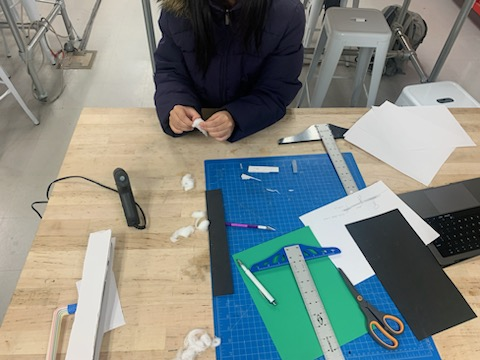
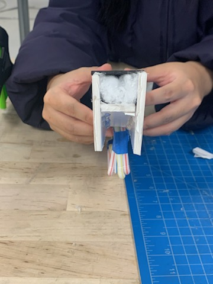
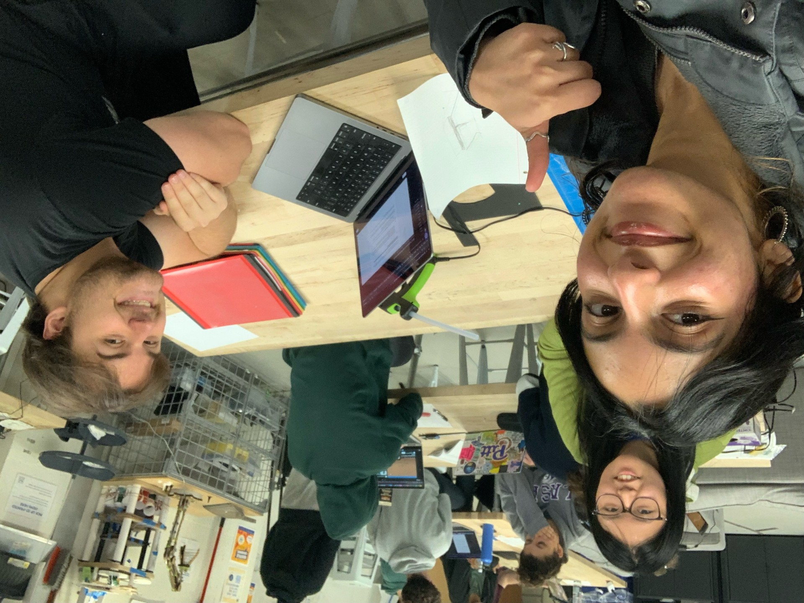

Our project is about rainwater collection. How might we seamlessly incorporate a water recycling apparatus into street infrastructure to both reduce accumulation on streets and reduce run-off?
To combat water scarcity where aquifers, reservoirs, and groundwater wells are overused To overcome the problems caused by water runoff like eutrophication, flooding, and the spread of toxic chemicals into groundwater sources Here, flooding in particular was our focus since it affects our locality! We chose to combine these issues with the problem of puddle formation around campus as we learned from our interviews that it is one of the main concerns of students walking between classes when it rains
The curb design will be implemented in the highest priority zones, both where the most water accumulates Taking advantage of Oakland’s topography, our pipes follow the downward incline to our tank at the base of Flagstaff Hill where water will be stored until use at Phipps Conservatory. The pathways the pipes will follow is shown below in red. This would also allow the pipes to be extended to other uphill areas like CMU. The design is meant to remain simplistic while accomplishing the goal of the previous prototype in a more seamless fashion. The prototype itself would be implemented into the curbs and adjust with grates in the joints to collect water and have water run through the curbs


